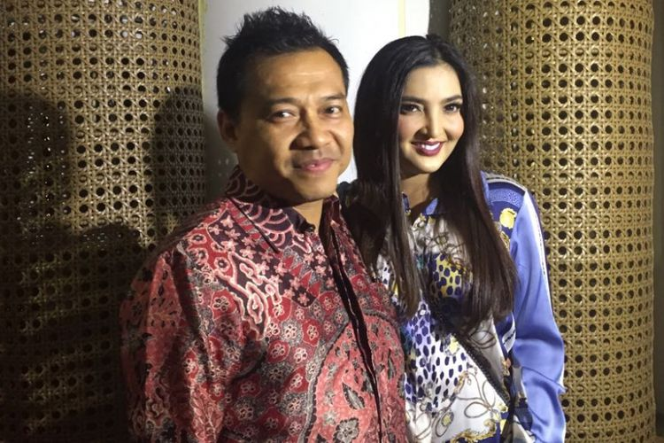

Arsy Minta Sepeda ke Jokowi, Anang Hermansyah Langsung Tegur
TRI SUSANTO SETIAWAN
KabarKabur.com -25/09/2017, 08:08 WIB

Ashanty dan Anang Hermansyah diabadikan di Galeri Indonesia Kaya, Grand Indonesia, Jalan Thamrin, Jakarta Pusat, Selasa (18/7/2017).
Arsy Addara Musicia Nurhermansyah meminta sebuah sepeda kepada Presiden Joko Widodo.
Hal diketahui melalui sebuah potongan video yang diunggah ibunda Arsy, penyanyi Ashanty, pada akun Instagram-nya @ashanty_ash pada Minggu (24/9/2017) dalam sebuah acara.
Saat itu, Arsy sedang digendong ayahnya, musisi sekaligus anggota DPR RI Anang Hermansyah. Mereka menghadiri acara pernikahan yang juga dihadiri Jokowi dan istri.
Tiba-tiba Arsy meminta sepeda kepada Jokowi. Dengan ramah Jokowi dan Iriana mengatakan Arsy harus diuji dengan pertanyaan dulu.
Namun rupanya, Anang langsung bereaksi juga. Hal itu dijelaskan dalam sebuah keterangan video yang ditulis oleh Ashanty.
"Acio (panggilan untuk Arsy) minta sepeda sm pak jokowi, ehh ditegur ayahnya langsung ngambek @jokowi," tulis Ashanty.
Adapun beberapa waktu lalu, Arsy memang menginginkan sebuah sepeda dari Jokowi.
Lewat video yang diunggah Ashanty ke akun Instagram-nya pada Rabu (23/8/2017), Arsy mengutarakan keinginannya.
"Papa Jokowi, Arsy minta sepeda," kata Arsy dalam video tersebut.
"Minta sepeda buat apa?" tanya Ashanty kepada anak sulungnya itu.
Arsy memberi jawaban, tetapi suaranya tidak terdengar dengan jelas. Ketika Ashanty mengarahkannya, Arsy mengangguk.
"Minta sepedanya sama Papa Jokowi ya?" tanya Ashanty.
Pada keterangan video tersebut juga dijelaskan alasan Arsy meminta sepeda. Menurut Ashanty, Arsy kini sudah lancar menyanyikan lagu-lagu nasional gara-gara sering menonton video Jokowi memberi sepeda kepada anak-anak.
penulis :Tri Susanto Setiawan
Editor :Kistyarini